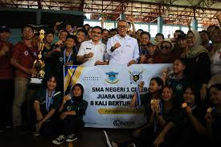

Selamat Datang di SMA SMK 1 KOTA CIREBON
Motto Sekolah: "Menciptakan Generasi Unggul"
.jpeg)
THE OWL BRIGADE
Tentang Sekolah SMA 1 KOTA CIREBON
Sejarah singkat tentang sekolah, visi, dan misi.
Perjanjian Linggarjati 15 November 1946 dari penandatanganan pada tanggal 25 maret 1947, tidak berlangsung lama, banyak perbedaan-perbedaan pendapat tentang beberapa pasal perjanjian antara pemerintahan Belanda dan pemerintahan Republik Indonesia. Perbedaan pendapat itu akhirnya melahirkan ketegangan-ketegangan antara kedua belah pihak. Pada puncak ketegangan itu akhirnya Pemerintah Belanda di Jakarta mengomando aksi agresi militer I terhadapa Republik Indonesia. Pada tanggal 21 Juli 1947, tentara Belanda dari Jakarta menyerbu daerah Republik di Pulau Jawa dimulai penyerbuan ke daerah Jawa Barat. Jawa Barat lalu dapat dikuasai tentara Republik. Sejak saat itu, tentara Belanda menduduki Kota Cirebon dan menggunakan SMA Negeri dan gedung SMOA yang terletak di Jalan Siliwangi Cirebon, sebagai tempat Asrama mereka. Bangku-bangku dan kursi-kursi seluruhnya dikeluarkan.
Saat tentara Belanda menyerbu kota Cirebon pada 21 Juli 1947, para siswa sedang libur kenaikan kelas yang bertepatan dengan liburan bulan Ramadhan. Sebagian para siswa yang tergabung dalam Ikatan Pelajar Indonesia menggalang kekuatan bersenjata dan bergerilya di daerah Ciwaru, Kuningan dan kesatuan mereka dinamai Batalyon 400 Tentara Pelajar yang bekerja sama dengan Tentara Nasional Indonesia, yang waktu itu dinamakan Tentara Keamanan Rakyat (TKR). Sementara itu di dalam kota Cirebon pun terdapat kegiatan-kegiatan yang bersifat non Coorperation artinya tidak mau bekerja sama dengan Tentara Belanda di Cirebon. Para Pegawai yang Coorperation itu sebagaian besar para Kepala-kepala Jawatan di antaranya Bapak R. KUSWANDONO, Bapak KINDARSIH, dan lain-lain, menggiatkan para Pemuda Cirebon untuk tetap belajar ditempat lain, digedung lain. Mereka mendirikan semacam sekolah swasta yang dinamakan “Kursus Pekerti” yang terletak di Jalan R.A. Kartini.
Bapak-bapak guru pengajar di antaranya dari Bapak Guru SMOA tersebut di atas yang gedungnya Tentara Belanda. SMOA singkatan dari “Sekolah Menengah Oemoem Atas”, sekarang dinamakan SMA. SMOA sejak berdirinya yaitu sekitar tahun 1946 dipimpin oleh Bapak R. PANGGABEAN, bekas kepala SMP Negeri tahun 1945/1946. “Kursus Pekerti”, berjalan dengan lancar, para siswanya belajar dengan tekun. Pimpinan Kursus bernama Bapak R. KUSWANDONO, bekas Kepala Kantor TENTARA CIREBON. Tentara Belanda menaruh curiga terhadap kegiatan perkumpulan Kursus Pekerti dan setiap saat didatangi Tentara Belanda untuk diperiksa setiap gerakannya. Setelah berjalan beberapa bulan, para siswa dan Bapak-Bapak Guru selalu merasa tidak tenang karena gangguan Tentara Belanda tersebut. Akhirnya Bapak R.KUSWANDONO memutuskan untuk bergabung dengan Taman Siswa. Para Siswa tergabung dengan Taman Siswa dan SMA Pekerti/Kursus Pekerti dinamakan Taman Madya, melebur diri dengan nama tersebut. Para siswa Taman Madya tersebut banyak di antaranya ber “Dwi Fungsi”, yaitu sebagai pelajar dan sebagai Tentara Pelajar, yaitu sambil tekun belajar dan bergiliran berjuang dihutan, turut bergabung dengan Batalyon 400 Tenatara Pelajar di Ciwaru, Kuningan. Mobil berlapis baja dan tank Belanda sering menakut-nakuti datang kekompleks Keraton Kanoman dan Keraton Kecirebonan tempat para siswa Taman Madya Belajar, tetapi para siswa tetap tenang, terus belajar. Taman Madya berjalan lancar dari tahun-ketahun, 1948 – 1949 – 1950.
Sementara itu lahirlah Perjanjian Renville tanggal 17 januari 1948, tetapi kemudian dilanggar Pemerintah Belanda dan kembali pecah perang Agresi Militer Belanda II tanggal 19 Desember 1948 langsung menyerbu kota Yogyakarta. Tanggal 7 Mei 1949 Perjanjian ROEM ROYEN di bawah pengawasan PBB. Hasil dari perjanjian itu Republik Indonesia dipulihkan kembali dan Kota Yuogyakarta sebagai Ibu Kotanya. Tanggal 23 Agustus 1949 diadakan konferensi Meja Bundar di DEN HAAG, negeri Belanda. Hasil Konferensi tersebut menetapkan bahwa Indonesia menjadi Negara Indonesia Serikat. Ketika itu, kemudian Taman Madya Bubar karena Bapak-bapak Gurunya kembali menjabat Kepala-Kepala Kanor, sebab dengan penyerahan kedaulatan kembali kepada Pemerintahan Indonesia, para non Cooperation kembali mengabdi kepada negara, walaupun ketika itu sebagai Negara Indonesia Serikat. Para Siswa Taman Madya ketika itu dianggap sebagai siswa berstatus Negeri dan kembali ke Sekolah Negeri di Jalan Siliwangi yang sekarang di tempati SMP Negeri 2 Cirebon, kembali menempati Gedung SMOA tersebut, sekitar tanggal 27 Januari 1950 dan dipimpin oleh Bapak R.KUSWANDONO. Beberapa bulan kemudian Bapak R. KUSWANDONO diangkat menjadi Kepala Sekolah SMA Negeri di Malang. Kepala Sekolah SMOA Cirebon Kemudian di jabat oleh Bapak R.MARKUM dan seterusnya nama SMOA diubah menjadi SMA Negeri Cirebon Karena Perubahan Ejaan Lama Yaitu Ejaan Soewandi. Sementara itu pemerintah Daerah Cirebon membangun gedung-gedung Sekolah di daerah Jalan Dr. Wahidin Sudirohusodo pada tahun 1950. di antaranya SMA Negeri Cirebon, Jalan Dr. Wahidin Sudirohusodo No. 81 Cirebon. Sejak tahun tersebut SMA Negeri Cirebon ke Gedung baru di Jalan Dr. Wahidin Sudirohusodo No.81 tersebut.
Bentuk Negara Indonesia Serikat lalu berganti menjadi Negara Kesatuan Republik Indonesia sejak tanggal 15 Agustus 1950. SMA Negeri Cirebon sejak pindah ke Jalan Dr. Wahidin Sudirohusodo No. 81 terdiri dari 2 (dua) Jurusan, yaitu Jurusan B (Pasti Alam) dan Jurusan C (Sosial Ekonomi). Pada tahun 1967 SMA Negeri Cirebon berkembang pesat dan akhirnya dipecah menjadi 2 (dua) SMA negeri berdasarkan SK. Menteri P DAN K ( DEPDIKBUD RI ) No: 0179/1967 tgl. 1 Mei 1967 yaitu SMA Negeri 1 Cirebon di Jalan Dr. Wahidin Sudirohusodo No. 81 dan SMA Negeri 2 Cirebon di Jalan Dr. Cipto Mangunkusumo No. 1. Pada tahun 1969 Bapak R.MARKUM Pensiun dan Pimpinan diganti oleh Bapak R. ABDULLAH, B.A. dari tahun 1969 sampai dengan tahun 1972 dan Bapak Drs. Achdiyat sebagai Wakil Kepala Sekolah. Pada tahun 1972 Kepala Sekolah dijabat oleh Bapak Drs. R. BUMITA SASTRADIREDJA, B.Sc. Pada tahun 1974 tanggal 1 Januari s/d 3 Maret 1982 Pimpinan SMA Negeri 1 Cirebon dijabat oleh Bapak Drs. ABAS EDIASUHATA. Tanggal 15 november 2001, Jabatan kepala SMA Negeri 1 Cirebon dijabat oleh Bapak Drs. H. Eman Surtama, M.Pd. Tanggal 14 Juni 2010, Jabatan Kepala SMA Negeri 1 Cirebon dijabat oleh Bapak Drs. H. Muchtar M.Pd. Dan Mulai tanggal 18 Septemier 2013, Jabatan Kepala SMA Negeri 1 Cirebon dijabat oleh Bapak Drs. H. Totong Muslihat Nanggadisatra, M.M. Mulai Tanggal 9 oktober 2015 Sampai 4 Mei 2021 Jabatan Kepala SMA Negeri 1 Cirebon dijabat oleh Dr. Nendi, S.Pd, M.M.
Untuk lebih jelasnya adalah sebagai berikut:
Bapak R.PANGGABEAN 1945 – 1946.
Bapak R. KUSWANDONO 1946 – 1950.
Bapak R. MARKUM 1951 – 1969.
Bapak R. ABDULLAH, B.A. 1969 – 1972.
Bapak Drs. R. BUMITA SASTRADIREDJA, B.Sc.1972 – 1974.
Bapak Drs. ABAS EDIASUHATA 1 Januari 1974 – 3 Maret 1982.
Bapak Drs. E. RUCHYAT, Sm.Hk. juli 1982 – Desember 1986.
Bapak POEDJO ASTOWO REKSOGUNAWAN, B.A. 6 Desember 1986 – 31 Desember 1992.
Bapak Drs. H. SOEMALJO ISKAK Januari – Februari 1993 (P.J.S.)
Bapak Drs. H. ROBERTO SAIDIN Februari 1993 – 31 Juli 1995.
Bapak K.E. YUSTIADI, B.A. 3 Agustus 1995 – 3 Sepetember 1995 (P.J.S).
Ibu Dra. Hj. MUNYATI, M.M. 4 September 1995 – 14 November 2001.
Bapak Drs. H. EMAN SURTAMA, M.Pd. 15 November 2001 – 4 April 2010.
Bapak Drs. H. Anwar Sanusi, S.Pd., M.Si. 5 April 2010 – 13 Juni 2010 (P.J.S).
Bapak Drs. H. Muchtar, M.Pd. 14 Juni 2010 – 18 September 2013
Bapak Drs. H. Totong Muslihat Nanggadisastra, M.M. 18 September 2013 – 9 Oktober 2015
Bapak Dr. Nendi, S.Pd., M.M. 9 Oktober 2015 – 4 Mei 2021
Ibu Hj. Naning Priyatnaningsih, S.Pd. M.Pd. 6 Desember 2021 - 31 Desember 2024
Fasilitas Sekolah
- aula
- Ruangan kelas
- Kamera pengawas (CCTV) di setiap sudut sekolah, tempat parkir, koridor sekolah dan ruang kelas (24-jam nonstop) 80 titik
- Lapangan Tertutup
- Gazebo
- Green house
- Koperasi Siswa 81
- Kantin Kejujuran
- keamanan 24 - jam
- Masjid Al - iman
- Mobil operasional sekolah
- Perpustakaan Buku
- Perpustakaan Elektonik
- Laboratorium Biologi
- Laboratorium Fisika
- Laboratorium Kimia
- Laboratorium Komputer
- Laboratorium Bahasa
- Hotspot Area
- Pusat sumber belajar
- Ruang kepala sekolah
- Ruang wakil kepala sekolah
- Ruang tata usaha
- Ruang piket
- Ruang guru
- Ruang kesenian
- Ruang alat olahraga
- Ruang sekretriat eksrakulikuler P.M.R. (U.K.S.)
- Ruang server komputer
- Ruang bimbingan konseling (BK)
- Sarana olahraga
- Lab Seni Budaya Dan Film
- kelas orang ganteng
Prestasi Sekolah
Prestasi yang telah diraih oleh sekolah dalam bidang akademik dan non-akademik.

.jpeg)